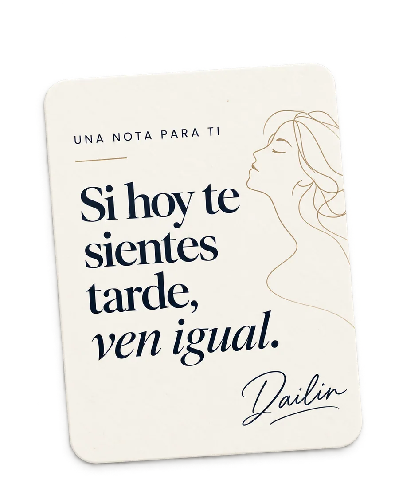

CON DAILIN UN CAPÍTULO CADA MARTES
Todavía estoy a tiempo.
Hay días en que miro mi vida y me pregunto si ya debería estar en otro lugar. Tal vez a ti también te pasa.
Yo tampoco tengo todo resuelto. De ahí nace este podcast.


01 — UNA CONVERSACIÓN A LA VEZ
01 / LA COLECCIÓN
Después de escuchar,
vuelve a ti.
Preparé estos cuadernos para seguir la conversación después de cada episodio: cuando quieres bajar el ruido, escribir lo que sientes y escucharte un poco mejor.


Desliza para explorar
Una pequeña colección para esas preguntas grandes.
Los dos cuadernos digitales ya están disponibles. Después del pago recibirás el enlace de tu PDF por correo. La guía gratuita sigue siendo gratis.
DEL PRIMER EPISODIO / ¿Y TÚ, CÓMO VAS?
«Hay días en los que puedo contarte todo lo que quiero hacer, y otros en los que pienso: por favor, hoy no me preguntes por los planes.»
Si alguna vez lo has sentido, este espacio también es para ti.
 empieza por escucharte
empieza por escucharte02 / UN REGALO PARA TI
No necesitas
responderlo
todo hoy.
5 preguntas para cuando sientes que vas tarde
Yo también conozco ese ruido entre lo que imaginabas para ti y lo que otras personas esperan. Hice esta guía para sentarnos un momento con cinco preguntas, sin prisa y sin respuestas perfectas.
DETRÁS DEL MICRÓFONODAILIN / 2026
03 / HOLA, SOY DAILIN
Yo tampoco tengo
todas las respuestas.
Este podcast nació de una pregunta que también me hago: ¿voy tarde?
Hay días en que me siento segura de lo que estoy construyendo. Otros días me comparo, dudo y quisiera tener un mapa. Empecé a grabar porque esas partes también merecen una conversación honesta.
Aquí hablamos de la vida que imaginábamos, de lo que pesa y de lo que todavía queremos intentar. Sin fingir que ya entendimos todo.
Puedes llegar como estés. Qué bueno encontrarnos aquí.
DailinUN NUEVO CAPÍTULO CADA MARTES
Nos escuchamos
del otro lado.
Yo pongo el tema. Tú puedes llegar como estés.
Nos hacemos compañía un rato.
04 / ESTOY AQUÍ PARA AYUDARTE
¿Necesitas
una mano?
Si tienes alguna pregunta sobre la guía, los cuadernos o cómo abrir tus archivos, escríbeme aquí. No hace falta tener todo claro para preguntar.
Con calma, Dailin
CUÉNTAME QUÉ NECESITAS
05 / CON CALMA Y SIN DUDAS
Antes
de empezar.
¿Son libros físicos o digitales?
Son recursos digitales en formato PDF. No enviamos un libro físico. Los cuadernos se compran de forma segura en Stripe y su descarga llega por correo electrónico. La guía gratuita también se envía por correo.
¿Necesito escuchar el podcast para usarlos?
No. Nacen de las conversaciones del podcast, pero puedes leerlos y hacer sus ejercicios por separado, a tu propio ritmo.
¿Puedo leerlos desde el teléfono?
Sí, son archivos PDF para leer desde el teléfono, la tablet o la computadora. También podrás imprimir las páginas si prefieres escribir a mano.
¿Las cinco preguntas son gratis?
Sí. Déjanos tu correo en el formulario y te enviaremos la guía gratuita, sin suscribirte a publicidad.
¿Cuándo podré conseguir los cuadernos?
Ya puedes conseguir «No voy tarde» por $4.99 USD y «Empezar de nuevo» por $7.99 USD. Recibirás un correo con el enlace de descarga cuando se confirme el pago.